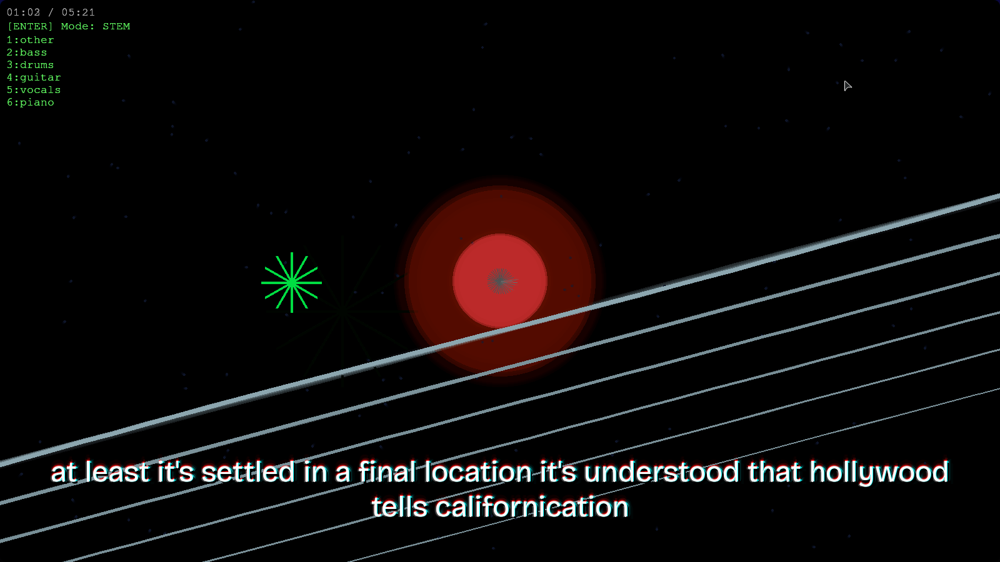
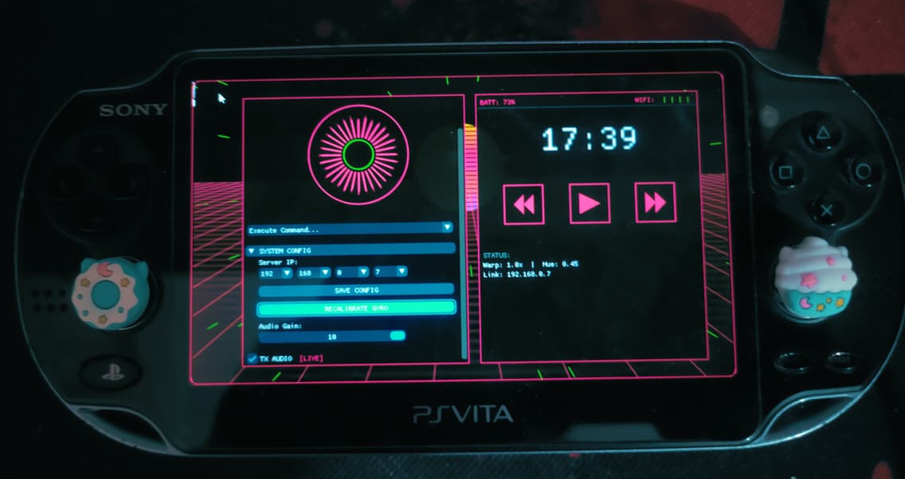

Edge Vision Pipeline: IMX500 → Metadata → Real-Time Control
I’ve revisited this idea multiple times (ずっとずっと) since my university hackathons, where I initially relied on basic OpenCV techniques like color masking. Those approaches felt limited, so I rebuilt the system using the Sony IMX500, running a custom fine-tuned YOLO11 model directly on the sensor. The system operates on metadata only, sending results to a Raspberry Pi Zero 2 W to drive real-time control via USB HID, forming a low-latency vision → action loop without transferring image data.
Read More
Guitar Karaoke
I recently got a guitar and found out that most of the guitar learning tools cost money, subscriptions even. It took me ~2 months to learn how to play by ear using trial-error, therefore I made this program for myself where I use Demucs, Whisper, ffmpeg and some tinkering to make this shell script that produces one mkv file that has the original version, a vocal karaoke version, a guitar karaoke version and a backing track along with automatic lyrics. The mkv video file can be played on any device that has VLC or a similar media player installed.
Read More
Distributed DIY Voice Assistant
I was unable to afford a microphone, so I made use of my PS Vita as a microphone and ended up using Dear ImGui to make a custom client app for my PS Vita to connect with my computer that is running my custom voice assistant using an Ollama model and lots of algorithms, rules and fuzzy logic.
Read More